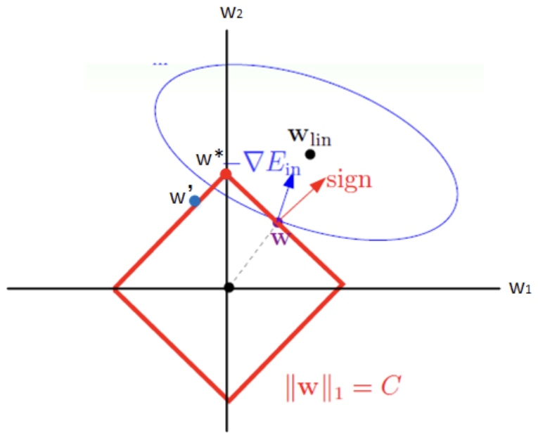
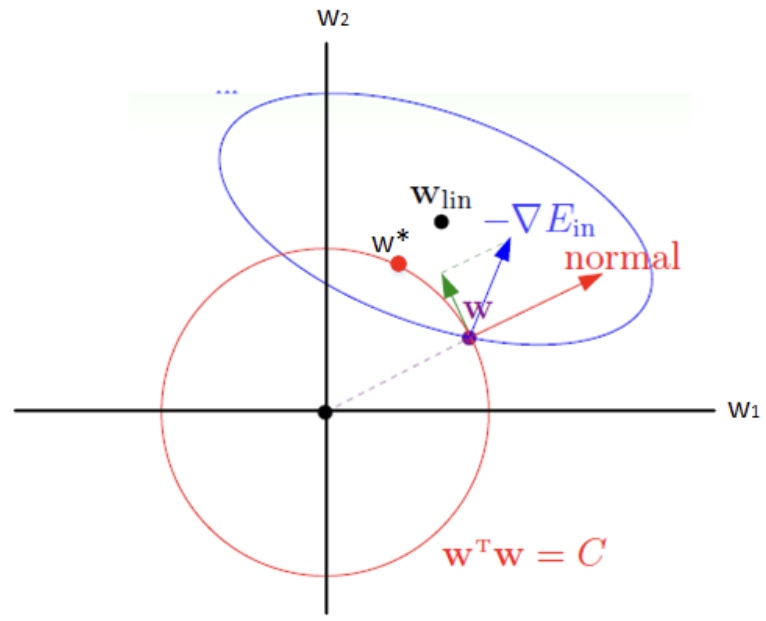

1 目的
控制模型复杂度，减少参数的过拟合。
2 思路
在原目标（代价）函数中添加惩罚项，对复杂度高的模型进行惩罚。
\( \begin{align} \widetilde {J}(\omega; X, y) = J(\omega; X, y) + \alpha \Omega (\omega) \end{align}\)
为了限制模型复杂度，即减少系数w的个数，最初想法是限制w中非零元素的个数。
\( \begin{align} \min \limits_{\omega}J(\omega; X, y) s.t. || \omega || _0 \leq C \end{align}\)
0范数表示向量中非0元素的个数。然而该问题不易求解，因此需要放松条件。
3 \(L_1\)正则化
3.1 思想
在原代价函数中增加1范数的约束条件
3.2 公式
思路：
\( \begin{align} l_1 : \Omega (\omega) = || \omega || _1 = \sum _i | \omega _i | \end{align}\)
\( \begin{align} \min \limits_{\omega}J(\omega; X, y) s.t. || \omega || _1 \leq C \end{align}\)
构建Lagrange函数：
\( \begin{align} L(\omega , \alpha) = J(\omega; X, y) + \alpha (|| \omega || _1 - C) \end{align}\)
\( \begin{align} \min \limits_{\omega}J(\omega; X, y) + \alpha ^ * || \omega || _1 \end{align}\)
3.3 图解

当参数过大时，会受到红色框的约束，使得参数不会过大，最终稳定在w1=0处，使得参数w产生稀疏性。
3.4 效果
使原始最优解的元素产生不同量的偏移，并使某些元素为0，从而产生稀疏性。
4 \(L_2\) 正则化
4.1 思想
在原代价函数中增加2范数的约束条件
4.2 公式
思路：
\( \begin{align} l_2 : \Omega (\omega) = || \omega || _2 = \sum _i \omega ^2 _i \end{align}\)
\( \begin{align} \min \limits_{\omega}J(\omega; X, y) s.t. || \omega || _2 \leq C \end{align}\)
构建Lagrange函数：
\( \begin{align} L(\omega , \alpha) = J(\omega; X, y) + \alpha (|| \omega || ^2 _2 - C) \end{align}\)
\( \begin{align} \min \limits_{\omega}J(\omega; X, y) + \alpha ^ * || \omega || ^2 _2 \end{align}\)
4.3 图解

同l1正则化，参数w也会收到红色框的约束，限制其大小，但是l2最终的稳定并不会使参数为0，因此不具备参数稀疏化的效果。
4.4 效果
对原始最优解的每个元素进行不同比例的放缩。